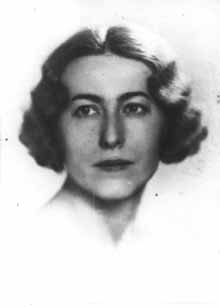

Teresa Trojanowska

Teresa Aniela Trojanowska (* 29 oktober 1907, U 2 maj 1986) föddes i Rawa Mazowiecka i det centrala Polen och studerade kemi vid Warszawas universitet där hon tog magisterexamen. Hon var mycket aktiv i studentlivet och bland annat redaktör för tidskriften "Kemist". Vid andra världskrigets utbrott deltog hon aktivt i Warszawas försvar. Hon var utbildad som ledare för civilt luftförsvar och blev utnämnd som distriktskommendant över stadsdelen Powisle. Därefter anslöts hon till den underjordiska motståndsrörelsen. 1941 arresterades hon av Gestapo och tillbringade resten av krigsåren i olika fängelser (Pawiak, Radom och Pinczow) och koncentrationsläger, bland annat i Ravensbrück och Auschwitz. Under den tiden organiserade hon illegala skolor för fängslade ungdomar och verkade även som lärare. Hennes mor och syster dog i Auschwitz.
Genom Svenska röda korset och greve Folke Bernadottes räddningsaktion kom hon med många andra till Sverige, dock med bruten hälsa. Efter en längre konvalescens, men ej helt återställd, upptog hon sin yrkesverksamhet och anställdes som kemist vid AB Separator, senare vid AB Atomenergi och slutligen vid KTH i Stockholm.
Teresa Matuszak-Trojanowska ägnade stor del av sin fritid åt arbete i polska föreningar och tillhörde bland annat styrelsen för Polska hjälpkommittén i Sverige och styrelsen för Förutvarande politiska fångars politiska förening i Sverige. Hennes andra stora intresse var skolning av barn och ungdom för att bibringa dem och lära dem bevara sitt polsknationella kulturarv. Hon instiftade och ledde under många år den polska ungdomsgruppen vid S:t Eriks ungdomsskola i Enskede.
Hon hade fallenhet for poesi och kunde till sina vänner även räkna den nu avlidne svenske poeten och litteraturkritikern samt en av arton medlemmar i Svenska Akademin, Karl Vennberg.